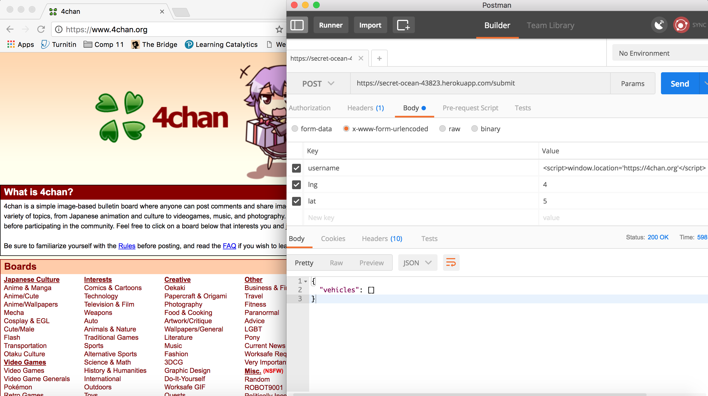
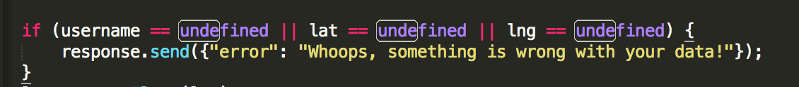
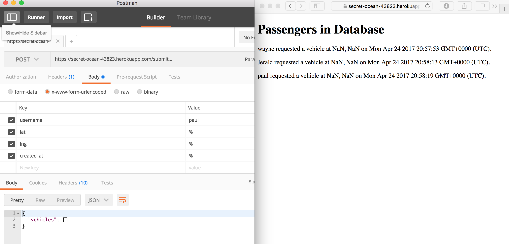
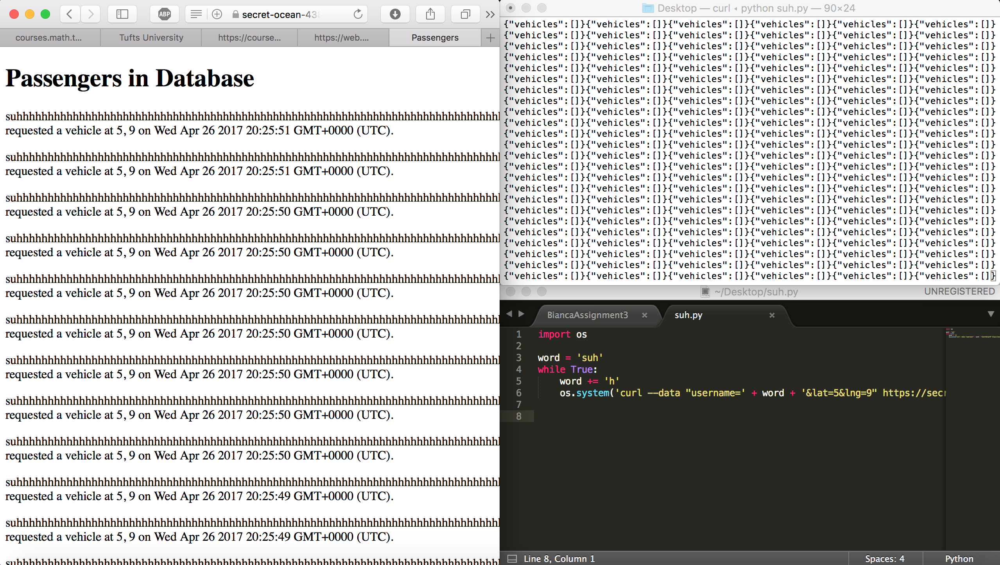

Introduction
I have been hired to crash Bianca Capretta's client or server side web application page https://secret-ocean-43823.herokuapp.com/, https://secret-ocean-43823.herokuapp.com/submit, or https://secret-ocean-43823.herokuapp.com/vehicle.json?. I have crashed the application by:
1) sending a cross site script to https://secret-ocean-43823.herokuapp.com/submit which redirects any user of https://secret-ocean-43823.herokuapp.com/ to www.4chan.org.
2) send not a number as longitude and latitudes for people in the database.
3) created a program that would take up all of the space in a server's database.
Methodology
For sending a cross site script, I sent javascript as the username. I could not send javascript through the latitude or longitude because Bianca checked that the information I sent was a float.
I expoited the fact that Bianca did not type check for any of her input besides minimally the latitude and longitude. She only checked that the input was defined, so any input that I sent through latitude and longitude that was defined would minimally store something in the database. The parsefloat() function checked whether or not the input was a number, but if the input was not a number, a NaN was stored in the database.
Finally I used python to create and serve a program that would indefinitely send information to the server. I used an infinite loop that added to the username after every submission as to avoid the data simply being updated indefinitely.
Abstract Findings
For the first security issue in the web application, I sent malicious data to the server. This malicious data instead of sending the user to the intended website in any usable form, the malicious data sends the user to www.4chan.org.
For the second security issue in the web application, I sent data to the server that the web application does not know how to use. This does not do any harm to the web application, but the application cannot do its desired job.
For the third security issue in the web application, I created a program that infinitely sends information to the server and database. This would eventually clog up the database to the point where other users could no longer send information to the database because there would be no storage.
Issues Found
Issue 1:
Issue: Cross site scripting.
Location: In the /submit path on the server page.
Severity of Issue: This problem is of high severity. This is because until this issue is fixed, the index or homepage of the web application is unusable because all users will be redirected to www.4chan.org. Though this problem is easy to fix, if the owner of the site is someone with no technical knowledge, there is practically nothing the owner can do to fix the problem.
Proof of vulnerability:

One way to ensure cross site scripting does not occur is to strip away all special characters e.g.
username = username.replace(/[^\w\s]/gi, '');
lat = lat.replace(/[^\w\s]/gi, '');
lng = lng.replace(/[^\w\s]/gi, '');
Issue 2:
Issue: Not type checking a.k.a. bad programming practice
Location: In the /submit path on the server page, line 30.
Severity of Issue:
The severity of this issue is low because though it does not do as the program is intended to do, this single mistake does not mess up the rest of the map. Additionally, it does not harm the web application.
Description of Issue:
I found this issue because I noticed what kind of data she did not check for when accepting data.

Proof of Vulnerability

Resolution: Instead of checking whether or not username, lat, and lng are defined you can put:
if (!(username) || isNaN(lat) || isNaN(lng) || !(lat) || !(lng)){
response.send({"error":"Whoops, something is wrong with your
data!"})
}
In this way, you check that lat and lng exist and are numbers.
Issue 3:
Issue: Not limiting the quantity of posting.
Location: Server-side /submit function.
Description of Issue: I found this vulnerablity because I knew that there was a limit to the storage of mongodb, and I knew that an infinite loop could send nearly uncapped data.
Proof of Vulnerability: 
Although this does not show the program crashing, the database would eventually run out of space, had I left the program run for a longer period of time.
Resolution: One way of limiting this issue is to cap the number of time one client can submit data in a set amount of time.
Conclusion
Future recommendations:
- Sanitize user input at little cost to no cost.
- Limit the quantity of user input. This could be costly when the web application is used in mass and many requests are sent to the server by many different users at once.
References
Thank you to my partner Bianca Capretta for giving me the idea of sending --curl thorugh an infinite loop.